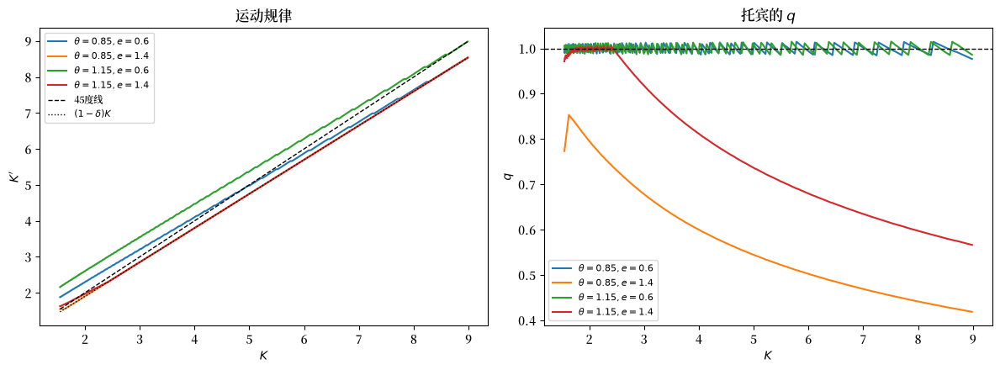
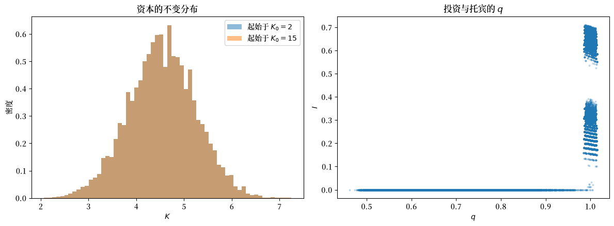

116. 不确定性下的最优增长与托宾 q#
116.1. 概览#
本讲座研究两篇论文。
第一篇是 Brock and Mirman [1972]，这是一篇关于生产函数受到随机冲击时单部门最优增长的经典分析。
第二篇是 Sargent [1980]，它增添了一个微小但关键的要素——不可逆投资——并利用这一结果来思考詹姆斯·托宾的 \(q\) 投资理论。
不确定性下的投资 这一讲座研究了一个竞争行业，其均衡是某个规划问题的解，且其均衡是一个具有不变分布的马尔可夫过程。
布洛克和米尔曼就一个单部门增长模型提出了相同的问题：
规划问题是否有良好性质的解，具有连续且单调的策略函数？
最优策略使资本成为一个马尔可夫过程；该过程是否存在不变分布？
资本的分布是否从任意初始条件收敛到该不变分布？
从单次实现计算出的时间平均是否收敛到总体矩？
后两个问题正是这两篇论文对计量经济学而言重要的原因。
一个能对这些问题给出肯定答案的模型，会给出可观测时间序列的平稳、遍历随机过程。
从一个长实现中计算出的样本矩，随后可用来估计总体矩，这正是 Hansen and Sargent [1980] 的理性预期计量经济学所要求的。
Sargent [1980] 将布洛克-米尔曼的工具应用于宏观经济学中的一个问题：何时、在何种意义上，存在一条将投资与托宾 \(q\) 联系起来的投资需求曲线？
在此过程中，本讲座会停下来讨论一个技术性问题，而这个问题最终被证明是核心所在：
规划者的价值函数相对于资本的导数，就是已安装资本的竞争性价格，也就是说，它本质上就是托宾的 \(q\)
因此整个分析能否成立，取决于这个导数是否存在
不可逆投资产生了一个角点，而在角点处，关于可微性的标准论证会失效
我们将描述这一困难，指出已发表论证中的一个缺口，并给出一个修正后的证明。
让我们从一些导入开始：
import numpy as np
import matplotlib.pyplot as plt
from collections import namedtuple
import matplotlib as mpl # i18n
FONTPATH = "fonts/SourceHanSerifSC-SemiBold.otf" # i18n
mpl.font_manager.fontManager.addfont(FONTPATH) # i18n
mpl.rcParams['font.family'] = ['Source Han Serif SC'] # i18n
116.2. 布洛克-米尔曼规划问题#
规划者选择消费以最大化
约束条件为
其中 \(k_t\) 是人均资本，\(i_t\) 是投资，\(\{r_t\}\) 是对生产造成冲击的独立同分布序列。
布洛克和米尔曼假设：对冲击的每一个实现值，\(f(\cdot, r)\) 都是递增的、严格凹的，并且满足 Inada 条件
并且 \(f\) 关于 \(r\) 递增，这意味着更高的冲击意味着更多的产出。
期间效用函数 \(u\) 是递增的、严格凹的且可微的。
在他们的表述中，资本在一期内完全折旧，因此 \(k_{t+1} = i_t\)，当期资源为 \(s_t = f(k_{t-1}, r_{t-1})\)。
贝尔曼方程为
其中 \(\nu\) 是冲击的分布。
标准的论证方法——压缩映射，加上单调性和凹性的保持性——给出了一个唯一的有界解 \(v\)，该解通过唯一的消费策略 \(c = g(s)\) 和投资策略 \(x = h(s) = s - g(s)\) 达到。
命题 116.1
最优策略 \(g\) 和 \(h\) 是递增且连续的，且 \(g(0) = h(0) = 0\)。
布洛克和米尔曼从一阶条件
证明了单调性，该式是欧拉方程的随机形式对应物。
如果 \(g\) 不随 \(s\) 增加，(116.3) 的左边将保持不变，而右边则会下降，因为 \(f\) 递增而 \(u'\) 和 \(f'\) 递减。
116.3. 长期行为#
最优策略使资本成为一个马尔可夫过程，
布洛克和米尔曼在论文中花了大量篇幅研究这个过程的长期行为。
这一策略与 不确定性下的投资 中所用的方法类似。
考虑将冲击固定在其可能的最低值 \(\underline r\) 和最高值 \(\bar r\) 时所得到的确定性差分方程：
设 \(\underline k\) 为第一个方程的一个正不动点，\(\bar k\) 为第二个方程的一个正不动点。
由于 \(f\) 对冲击递增且 \(h\) 递增，有 \(\underline k \leq \bar k\)。
布洛克和米尔曼称，当 \(\underline k\) 和 \(\bar k\) 均为正且 \(\underline k < \bar k\) 时，模型具有稳定的不动点构型。
随后他们证明：
低于 \(\underline k\) 和高于 \(\bar k\) 的资本存量集合是暂态的：该过程会离开这些集合并且不再返回
区间 \([\underline k, \bar k]\) 是该过程最终所处的区域
定理 116.1
存在一个分布函数 \(F\)，使得 \(k_t\) 的分布 \(F_t\) 一致收敛到 \(F\)，并且 \(F\) 不依赖于初始资本存量。
定理 116.1 是 不确定性下的投资 中不变分布定理的对应物。
证明的重要一环是关于逆最优过程的论证，该过程将马尔可夫过程在时间上反向运行；布洛克和米尔曼用它来证明平稳分布存在且唯一，而无需借助概率论中更重的工具。
分布的收敛本身对计量经济学而言还不够。
计量经济学家额外需要的是一个均值遍历定理：保证沿单次实现计算出的平均值会收敛到 \(F\) 的矩，
对于具有唯一不变分布且不动点构型稳定的马尔可夫过程，这样的大数定律是成立的；Sargent [1980] 援引了杜布（Doob）著作中的版本，以此来证明计算其模型总体矩并将其与样本矩进行比较是合理的。
这正是从布洛克-米尔曼理论通往二十世纪七十年代末、八十年代初发展起来的理性预期计量经济学的桥梁。
116.4. 不可逆投资与托宾 q#
Sargent [1980] 对模型做了一处修改：资本一旦安装，就不能被“吃掉”（即消耗掉）。
产出可以被消费，也可以被加入到资本存量中，但这种转换不能反向进行，
其中 \(0 < \delta < 1\) 为折旧率。
产出为 \(y_t = f(K_t)\theta_t\)，单期效用函数 \(u(c_t, e_t)\) 受到偏好冲击 \(e_t\) 的影响。
冲击 \((\theta_t, e_t)\) 在时间上独立同分布。
这个微小的改变为什么重要？
在投资可逆的模型中，一单位已安装资本的价格总是等于一单位新生产产出的价格，因此托宾的 \(q\) 恒等于 1，企业根本没有投资需求曲线可言。
不可逆性约束是一种摩擦，它使得已安装资本的价格可以低于新资本的价格。
萨金特描述了一个竞争经济，在该经济中，家庭拥有资本，将资本出租给企业，并以相对价格 \(p_{Kt}\)（即托宾的 \(q\)）交易对已安装资本的索取权。
按照 Lucas and Prescott [1971] 的做法——正是 不确定性下的投资 所使用的策略——他通过产生该均衡的规划问题，间接地研究竞争均衡。
规划者求解
设 \(\lambda \geq 0\) 为不可逆性约束所对应的乘子。
一阶条件为
已安装资本的价格为
因此该模型意味着：
\(q \leq 1\) 始终成立
当且仅当投资为正时，\(q = 1\)
当且仅当不可逆性约束起作用（即投资为零）时，\(q < 1\)
请注意 (116.9) 所说的内容：托宾的 \(q\) 就是规划者价值函数的导数，经边际效用归一化后得到。
因此一切都取决于 \(v_K\) 是否存在。
116.5. 价值函数的可微性#
这里正是困难所在。
研究价值函数可微性的标准工具是 Benveniste and Scheinkman [1979] 的定理。
定理 116.2 (Benveniste-Scheinkman)
设 \(v\) 在开集 \(D\) 上是凹的，\(K_0 \in D\)。
假设 \(W\) 是凹的，在 \(K_0\) 处可微，并在 \(K_0\) 的某邻域上满足 \(W(K) \leq v(K)\)，且 \(W(K_0) = v(K_0)\)。
那么 \(v\) 在 \(K_0\) 处可微，且 \(v'(K_0) = W'(K_0)\)。
构造这样一个 \(W\) 的通常方法是：取 \(K_0\) 处的最优方案，将下一期资本固定在其最优值 \(K_0'\)，并让消费来吸收 \(K\) 的变化：
这是一个可行方案，所以 \(W_1 \leq v\)，在 \(K_0\) 处取等，并且它是可微的。
但可行性要求 \(K_0' \geq (1-\delta)K\)，即 \(K \leq K_0'/(1-\delta)\)。
当投资为正时，\(K_0' > (1-\delta)K_0\)，该方案在 \(K_0\) 的一个完整邻域上都是可行的。
当投资为零时，恰好有 \(K_0' = (1-\delta)K_0\)，而该方案对所有 \(K > K_0\) 都不可行。
在角点处，标准的支撑函数只能从左侧获得。
这正是已发表论证变得棘手之处，在我们看来，其中存在一些缺口。
备注
两个具体的困难之处。
第一，Sargent [1980] 将价值函数的导数写成如下形式
这是通过将一阶条件 (116.8) 以等式形式代入包络条件而得到的。
这一代换只有在投资为正时才是合理的。
而当投资为零时，\(\lambda > 0\)，该公式高估了 \(v_K\)；该论文自身随后给出的不等式记录了这一点，因此这两个表述彼此并不一致。
第二，该论证通过对迭代序列 \(v^j = T^j v^0\) 的归纳来建立价值函数的可微性，然后取极限。
这一路径需要了解约束恰好起作用处的资本存量集合的结构。
已发表的证明处理了三种构型，见其图3-5中的描绘，并援引一个附录，该附录假设迭代序列几乎处处二阶可微。
而该附录又通过对一阶条件求导，并指出“由于右边几乎处处存在，所以左边也存在”来为此辩护，但这一推理并不能按原样成立，并且它未加证明地断言约束起作用点的集合的勒贝格测度为零。
幸运的是，结论是正确的，并且存在一条完全避开对迭代序列进行归纳的路径。
关键的观察是：在角点处，有一个不同的可行方案能够提供所需的支撑函数：在任何资本存量水平上，不进行任何投资都是可行的，因此它在两侧都适用。
命题 116.2
假设 \(u\) 和 \(f\) 都是递增的、严格凹的且连续可微的，并且 \(u_c(0,e) = \infty\)，\(f'(0) = \infty\)。
那么对每个 \((\theta, e)\)，由 (116.7) 定义的价值函数 \(v(\cdot,\theta,e)\) 在 \((0,\infty)\) 上连续可微，且
其中 \(c\) 和 \(K'\) 是在 \((K,\theta,e)\) 处的最优值。
当投资为正时，(116.11) 化简为 \(v_K = u_c(c,e)[f'(K)\theta + (1-\delta)]\)。
当投资为零时，\(v_K < u_c(c,e)[f'(K)\theta + (1-\delta)]\)。
Proof. 第0步。 与 (116.7) 相关联的算子将有界连续凹函数映射为有界连续严格凹函数，所以 \(v(\cdot,\theta,e)\) 是凹的且连续的，并且最优策略是单值且连续的。
第1步（投资为正）。 设 \(I(K_0,\theta,e) > 0\)，令 \(K_0'\) 为最优选择。
那么 \(K_0' > (1-\delta)K_0\)，于是由连续性，将下一期资本固定在 \(K_0'\) 的方案在 \(K_0\) 的某个邻域内对所有 \(K\) 都是可行的。
因此 (116.10) 中的函数 \(W_1\) 是凹的、连续可微的，被 \(v\) 所支配，且在 \(K_0\) 处等于 \(v\)。
定理 116.2 给出 \(v\) 在 \(K_0\) 处的可微性，且
因为此处一阶条件以等式成立，\(\beta \mathbb{E}[v_K(K_0',\cdot)] = u_c(c,e)\)，代入即得 (116.11)。
第2步（投资为零，以较小资本存量为条件）。 设 \(I(K_0,\theta,e) = 0\)，这样 \(K_0' = (1-\delta)K_0\)，且在 \(K_0\) 处不进行投资是最优的。
转而考虑本期不投资、此后按最优方式行事的方案：
在任何资本存量水平上不进行投资都是可行的，所以处处有 \(W_2 \leq v\)，且 \(W_2(K_0) = v(K_0)\)，\(W_2\) 是凹的。
假设对每个 \((\theta',e')\)，\(v(\cdot,\theta',e')\) 在 \((1-\delta)K_0\) 处都可微。
那么 \(W_2\) 在 \(K_0\) 处可微；在期望内求导是合理的，因为函数 \(v(\cdot,\theta',e')\) 是凹函数，因此在紧邻域上具有共同界的局部利普希茨性。
定理 116.2 随即给出 \(v\) 在 \(K_0\) 处的可微性，且
这正是 (116.11)。
第3步（角点不可能起作用的区域）。 因为 \(f'(0) = \infty\)，所以存在 \(\eta > 0\)，使得对每个 \(K \leq \eta\) 以及每个 \((\theta,e)\)，都有 \(I(K,\theta,e) > 0\)。
直观理解是：当资本趋于零时，资本的边际产量会变得无穷大，所以今天放弃一点消费会在明天换来极大的消费量。
要使这一点精确化，需要比较当 \(K \downarrow 0\) 时 (116.8) 两边发散的速率，因为例如在对数效用下，两边都会变得无界。
Sargent [1980] 在其附录A（其命题 A2）中证明了该论断，所依据的是他为此目的而对 \(u\) 和 \(f\) 施加的一个明确限制。
这一结果是下面论证中唯一借用其附录内容之处，并且它与此处所讨论的可微性问题相互独立。
由第1步可知，对每个 \((\theta,e)\)，\(v(\cdot,\theta,e)\) 因此在 \((0,\eta]\) 上可微。
第4步（自助提升）。 令
我们断言：若 \((0, A) \subseteq D\)，则 \((0, A/(1-\delta)) \subseteq D\)。
取 \(K < A/(1-\delta)\) 及任意 \((\theta,e)\)。
若 \(I(K,\theta,e) > 0\)，第1步可直接应用。
若 \(I(K,\theta,e) = 0\)，则 \((1-\delta)K < A\)，所以对每个 \((\theta',e')\)，\(v(\cdot,\theta',e')\) 在 \((1-\delta)K\) 处可微，第2步可以应用。
由第3步，我们可以从 \(A = \eta\) 开始归纳。
因为 \(1/(1-\delta) > 1\)，反复应用该断言得到对每个 \(n\) 都有 \((0, \eta (1-\delta)^{-n}) \subseteq D\)，因此 \(D = (0,\infty)\)。
第5步（连续性）。 在开区间上可微的凹函数在该区间上具有连续导数，所以 \(v(\cdot,\theta,e)\) 是连续可微的。
最后，在投资为零之处，一阶条件以 \(\lambda > 0\) 成立，所以 \(\beta \mathbb{E}[v_K(K',\cdot)] < u_c\)，(116.11) 给出 \(v_K < u_c[f'(K)\theta + (1-\delta)]\)。
这个修正后的公式有一个自然的解读。
将 (116.11) 向前迭代可得
今天安装的一单位边际资本会在其存续期间持续产生边际产量，而每一期的边际产量都按产出到来那一天的消费边际效用来估值。
当投资为正时，市场会以新产出的成本为整条流定价，(116.12) 就化简为 \(u_c[f'(K)\theta + (1-\delta)]\)。
当投资为零时，情况并非如此，这一差异恰恰是使 \(q\) 低于 1 的原因。
116.6. 计算模型#
现在我们用下式来求解 (116.7) 的模型：
冲击 \(\theta\) 和 \(e\) 各自以等概率取两个值，并且彼此之间以及随时间都是独立的。
有一个数值细节非常重要。
不可逆性约束要求 \(K' \geq (1-\delta)K\)，所以我们希望只要 \(K\) 是资本网格上的一点，\((1-\delta)K\) 也是网格上的一点。
按照 Sargent [1980] 的做法，我们使用一个比率为 \((1-\delta)^{1/z}\)（\(z\) 为整数）的几何网格，使得 \((1-\delta)K_i = K_{i-z}\) 精确成立。
Model = namedtuple("Model", "β δ a z K θ e W nθ ne")
def create_model(β=0.95, δ=0.05, a=0.25, z=10, n_K=500, K_hi=20.0,
θ_vals=(0.85, 1.15), e_vals=(0.6, 1.4)):
"几何资本网格，使得 (1-δ)K 本身也是网格点。"
ratio = (1 - δ)**(1/z)
K = K_hi * ratio**np.arange(n_K - 1, -1, -1)
θ, e = np.array(θ_vals), np.array(e_vals)
W = np.outer(np.ones(len(θ))/len(θ), np.ones(len(e))/len(e))
return Model(β, δ, a, z, K, θ, e, W, len(θ), len(e))
f = lambda m, K: K**m.a
f_prime = lambda m, K: m.a * K**(m.a - 1)
规划者从网格中选择下一期的资本，需满足消费为正以及不可逆性约束。
def solve_model(m, irreversible=True, tol=1e-10, maxit=5000, howard=50):
"带有霍华德策略改进步骤的价值函数迭代。"
nK = len(m.K)
C = f(m, m.K)[:, None] * m.θ[None, :] # 产出 (K, θ)
C = C[:, None, :] + (1 - m.δ)*m.K[:, None, None] - m.K[None, :, None]
ok = C > 1e-12 # (K, K', θ)
if irreversible: # K' ≥ (1-δ)K
irr = np.zeros((nK, nK), bool)
for i in range(nK):
irr[i, max(i - m.z, 0):] = True
ok = ok & irr[:, :, None]
U = np.where(ok[:, :, :, None],
m.e[None, None, None, :] * np.log(np.where(ok, C, 1.0))[:, :, :, None],
-1e12)
v = np.zeros((nK, m.nθ, m.ne))
for it in range(maxit):
EV = np.tensordot(v, m.W, axes=([1, 2], [0, 1])) # E v(K') 对 (θ', e') 求期望
obj = U + m.β * EV[None, :, None, None]
idx = obj.argmax(axis=1)
v_new = np.take_along_axis(obj, idx[:, None, :, :], axis=1)[:, 0, :, :]
for _ in range(howard):
EV = np.tensordot(v_new, m.W, axes=([1, 2], [0, 1]))
v_new = (np.take_along_axis(U, idx[:, None, :, :], axis=1)[:, 0, :, :]
+ m.β * EV[idx])
if np.max(np.abs(v_new - v)) < tol:
v = v_new
break
v = v_new
K_next = m.K[idx]
I = K_next - (1 - m.δ) * m.K[:, None, None]
C_pol = (f(m, m.K)[:, None, None] * m.θ[None, :, None]
+ (1 - m.δ) * m.K[:, None, None] - K_next)
return v, idx, K_next, I, C_pol
为了计算 \(q\)，我们需要 \(v_K\)，而 命题 116.2 告诉我们如何得到它：给定最优策略，方程 (116.11) 是关于 \(v_K\) 的一个线性不动点问题，并且它是模为 \(\beta(1-\delta)\) 的压缩映射。
def marginal_value(m, idx, C_pol, tol=1e-13, maxit=50_000):
"求解包络方程 v_K = u_c f'(K)θ + β(1-δ) E v_K(K')。"
vK = np.zeros_like(C_pol)
direct = (m.e[None, None, :]/C_pol) * f_prime(m, m.K)[:, None, None] * m.θ[None, :, None]
for _ in range(maxit):
EvK = np.tensordot(vK, m.W, axes=([1, 2], [0, 1]))
new = direct + m.β * (1 - m.δ) * EvK[idx]
if np.max(np.abs(new - vK)) < tol:
return new
vK = new
return vK
m = create_model()
v, idx, K_next, I, C_pol = solve_model(m)
vK = marginal_value(m, idx, C_pol)
u_c = m.e[None, None, :] / C_pol
E_vK = np.tensordot(vK, m.W, axes=([1, 2], [0, 1]))
q = m.β * E_vK[idx] / u_c
corner = I <= 1e-12
print(f"投资为零的状态占比: {corner.mean():.3f}")
投资为零的状态占比: 0.567
让我们通过将包络公式与所计算价值函数的有限差分导数进行比较，从数值上检验一下 命题 116.2。
vK_fd = np.gradient(v, m.K, axis=0)
naive = u_c * (f_prime(m, m.K)[:, None, None] * m.θ[None, :, None] + (1 - m.δ))
mid = ((m.K > 2.2) & (m.K < 7.0))[:, None, None] & np.ones_like(corner)
rel = lambda x: np.median((np.abs(x - vK_fd)/np.abs(vK_fd))[mid & sel])
sel = ~corner
print(f"投资为正: 包络公式误差 {rel(vK):.4f}, "
f"朴素公式误差 {rel(naive):.4f}")
sel = corner
print(f"投资为零: 包络公式误差 {rel(vK):.4f}, "
f"朴素公式误差 {rel(naive):.4f}")
投资为正: 包络公式误差 0.0005, 朴素公式误差 0.0066
投资为零: 包络公式误差 0.0001, 朴素公式误差 0.3856
在投资为正之处，两个公式都与数值导数一致。
在投资为零之处，包络公式 (116.11) 依然准确，而公式 \(u_c[f'(K)\theta + (1-\delta)]\) 则会偏离百分之几十。
这正是这一修正的实际意义所在：在角点处，这两个表达式确实是不同的对象，而给出已安装资本价格的是包络公式。
我们还可以验证证明中的第3步，该步骤断言存在一个小资本存量区域，在该区域内角点永远不会起作用。
m_wide = create_model(n_K=700) # 一个能达到更低资本存量的网格
_, idx_w, _, I_w, _ = solve_model(m_wide)
frac_corner = (I_w <= 1e-12).reshape(len(m_wide.K), -1).mean(axis=1)
first = np.argmax(frac_corner > 0)
print(f"网格范围始于 K = {m_wide.K.min():.3f}")
print(f"当 K < {m_wide.K[first]:.3f} 时，对每个冲击投资都为正")
网格范围始于 K = 0.555
当 K < 1.058 时，对每个冲击投资都为正
116.6.1. 策略与已安装资本的价格#
fig, axes = plt.subplots(1, 2, figsize=(12, 4.5))
show = (m.K > 1.5) & (m.K < 9)
for j in range(m.nθ):
for l in range(m.ne):
lab = rf'$\theta={m.θ[j]}, e={m.e[l]}$'
axes[0].plot(m.K[show], K_next[show, j, l], label=lab)
axes[1].plot(m.K[show], q[show, j, l], label=lab)
axes[0].plot(m.K[show], m.K[show], 'k--', lw=1, label='45度线')
axes[0].plot(m.K[show], (1-m.δ)*m.K[show], 'k:', lw=1, label=r'$(1-\delta)K$')
axes[0].set_xlabel('$K$'); axes[0].set_ylabel("$K'$"); axes[0].set_title('运动规律')
axes[1].axhline(1.0, color='k', ls='--', lw=1)
axes[1].set_xlabel('$K$'); axes[1].set_ylabel('$q$'); axes[1].set_title("托宾的 $q$")
axes[0].legend(fontsize=8); axes[1].legend(fontsize=8)
plt.tight_layout()
plt.show()
findfont: Failed to find font weight normal, now using 600.
findfont: Failed to find font weight normal, now using 600.
findfont: Failed to find font weight normal, now using 600.
findfont: Failed to find font weight normal, now using 600.
findfont: Failed to find font weight normal, now using 600.
findfont: Failed to find font weight normal, now using 600.

图 116.1 运动规律与托宾 q#
每当不可逆性约束起作用时，运动规律就会沿着较低的那条虚线 \((1-\delta)K\) 运行。
恰恰是在这一区域，\(q\) 会降到 1 以下。
116.6.2. 不变分布#
与 不确定性下的投资 中一样，我们要检验长期分布是否不依赖于经济体的起点。
def simulate(m, idx, K0, T=50_000, seed=0, burn=500):
"模拟均衡马尔可夫过程。"
rng = np.random.default_rng(seed)
j_idx = rng.integers(0, m.nθ, T)
l_idx = rng.integers(0, m.ne, T)
k = np.abs(m.K - K0).argmin()
path = np.empty(T, int)
for t in range(T):
path[t] = k
k = idx[k, j_idx[t], l_idx[t]]
return path[burn:], j_idx[burn:], l_idx[burn:]
p_lo, j_lo, l_lo = simulate(m, idx, K0=2.0, seed=7)
p_hi, j_hi, l_hi = simulate(m, idx, K0=15.0, seed=7)
print(f"从 K0 = 2 起始的平均资本: {m.K[p_lo].mean():.4f}")
print(f"从 K0 = 15 起始的平均资本: {m.K[p_hi].mean():.4f}")
print(f"访问到的资本范围: [{m.K[p_lo].min():.2f}, {m.K[p_lo].max():.2f}]")
从 K0 = 2 起始的平均资本: 4.5395
从 K0 = 15 起始的平均资本: 4.5395
访问到的资本范围: [2.06, 7.24]
fig, axes = plt.subplots(1, 2, figsize=(12, 4.5))
axes[0].hist(m.K[p_lo], bins=60, density=True, alpha=0.5, label='起始于 $K_0 = 2$')
axes[0].hist(m.K[p_hi], bins=60, density=True, alpha=0.5, label='起始于 $K_0 = 15$')
axes[0].set_xlabel('$K$'); axes[0].set_ylabel('密度')
axes[0].set_title('资本的不变分布')
axes[0].legend()
q_sim, I_sim = q[p_lo, j_lo, l_lo], I[p_lo, j_lo, l_lo]
axes[1].scatter(q_sim, I_sim, s=4, alpha=0.2)
axes[1].set_xlabel('$q$'); axes[1].set_ylabel('$I$')
axes[1].set_title("投资与托宾的 $q$")
plt.tight_layout()
plt.show()

图 116.2 不变分布以及投资与 q 的关系#
正如 定理 116.1 所预示的那样，这两个直方图是重合的。
右侧的散点图再现了 Sargent [1980] 的核心图景。
只有当 \(q\) 等于 1 时投资才为正；当 \(q\) 低于 1 时，投资恰好为零。
print(f"I > 0 时的 q: [{q_sim[I_sim > 1e-12].min():.4f}, {q_sim[I_sim > 1e-12].max():.4f}]")
print(f"I = 0 时的 q: [{q_sim[I_sim <= 1e-12].min():.4f}, {q_sim[I_sim <= 1e-12].max():.4f}]")
I > 0 时的 q: [0.9851, 1.0148]
I = 0 时的 q: [0.4619, 1.0040]
与 1 之间的微小偏差反映了资本网格的离散性。
萨金特的观点此刻变得清晰可见。
在这些数据中，投资与 \(q\) 之间的确存在正相关关系，计量经济学家当然可以去跑这样一个回归。
但这个关系并不是一条投资需求曲线。
它是一种混杂关系，将偏好、技术以及冲击的分布混合在一起，而且只要其中任何一项发生变化，它就会随之改变。
练习 116.3 要求你演示这一点。
116.7. 练习#
练习 116.1
Brock and Mirman [1972] 之所以著名，部分原因在于存在一个可以手算求解的特例。
设 \(u(c) = \ln c\)，\(f(k, r) = r k^\alpha\)，其中 \(0 < \alpha < 1\)，并设资本每期完全折旧，使得 \(k_{t+1} = f(k_t, r_t) - c_t\)。
验证最优策略为 \(k_{t+1} = \alpha\beta\, r_t k_t^\alpha\)。
证明 \(\ln k_t\) 服从 AR(1) 过程，并在 \(\ln r_t \sim N(\mu, \sigma^2)\) 时推导其不变分布的均值和方差。
模拟该模型，并检验其不变分布以及均值遍历性质 (116.5)。
解答 练习 116.1
猜测资源中有一个固定比例被储蓄，即 \(k_{t+1} = s\, r_t k_t^\alpha\)。
该问题的欧拉方程为
将 \(c_t = (1-s) r_t k_t^\alpha\) 和 \(k_{t+1} = s r_t k_t^\alpha\) 代入，右边变为
而左边是 \(1/[(1-s) r_t k_t^\alpha]\)。
令两者相等，得到 \(s = \alpha\beta\)。
对策略取对数，
这是一个系数为 \(\alpha\) 的 AR(1) 过程。
当 \(\ln r_t \sim N(\mu, \sigma^2)\) 时，\(\ln k\) 的不变分布是正态分布，其
α, β_d, μ, σ = 0.4, 0.95, 0.0, 0.1
T = 200_000
rng = np.random.default_rng(0)
ln_r = μ + σ * rng.normal(size=T)
k = np.empty(T + 1)
k[0] = 1.0
for t in range(T):
k[t+1] = α * β_d * np.exp(ln_r[t]) * k[t]**α
ln_k = np.log(k[1000:])
print(f"ln k 的均值: 模拟值 {ln_k.mean():.4f}, "
f"理论值 {(np.log(α*β_d) + μ)/(1-α):.4f}")
print(f"ln k 的方差: 模拟值 {ln_k.var():.4f}, "
f"理论值 {σ**2/(1-α**2):.4f}")
ln k 的均值: 模拟值 -1.6126, 理论值 -1.6126
ln k 的方差: 模拟值 0.0119, 理论值 0.0119
时间平均值与不变分布的总体矩相匹配，这正是均值遍历性质 (116.5) 在起作用。
练习 116.2
本练习考察上文讨论的两个 \(v_K\) 候选公式之间的差异。
对于基准模型，在每个状态上计算：
包络公式 (116.11)
公式 \(u_c(c,e)[f'(K)\theta + (1-\delta)]\)
价值函数的有限差分导数
然后：
确认在投资为正之处，三者是一致的。
确认在投资为零之处，第二个公式与另外两者不一致，并报告差异大小。
利用 (116.8)，解释为什么第二个公式是 \(v_K\) 的一个上界。
如果在所有地方都使用第二个公式，计算出的 \(q\) 会出什么问题？
解答 练习 116.2
第二个公式的得来方式是：仿佛 \(\lambda = 0\) 一样，将一阶条件 (116.8) 代入包络条件。
由于 \(\lambda \geq 0\)，略去它只会使该表达式增大，因此
当且仅当 \(\lambda = 0\)（即投资为正）时取等号。
gap = np.abs(naive - vK_fd)/np.abs(vK_fd)
env = np.abs(vK - vK_fd)/np.abs(vK_fd)
for name, sel in (("投资为正", ~corner), ("投资为零", corner)):
s = mid & sel
print(f"{name:20}: 包络公式 {np.median(env[s]):.4f} "
f"朴素公式 {np.median(gap[s]):.4f} 最大朴素误差 {gap[s].max():.4f}")
q_naive = m.β * np.tensordot(naive, m.W, axes=([1, 2], [0, 1]))[idx] / u_c
print(f"\n使用朴素公式，最大 q = {q_naive.max():.3f} "
f"（理论要求 q ≤ 1）")
print(f"q > 1 的状态占比: {(q_naive > 1 + 1e-8).mean():.3f}")
投资为正 : 包络公式 0.0005 朴素公式 0.0066 最大朴素误差 0.0134
投资为零 : 包络公式 0.0001 朴素公式 0.3856 最大朴素误差 1.0175
使用朴素公式，最大 q = 1.863 （理论要求 q ≤ 1）
q > 1 的状态占比: 0.578
在所有地方都使用第二个公式会产生超过 1 的 \(q\) 值，而理论排除了这种可能。
原因是经济学上的，而非数值上的：在角点处，市场并不会按照新资本的成本为已安装资本定价，这恰恰是因为家庭想要出售资本而又无法这样做。
练习 116.3
证明投资对 \(q\) 的回归并非结构性关系。
针对在以下方面有所不同的若干经济体求解并模拟该模型：
偏好风险的大小（\(e\) 的离散程度）
技术风险的大小（\(\theta\) 的离散程度）
折旧率 \(\delta\)
对于每个经济体，报告 \(I\) 对 \(q\) 回归的斜率和 \(R^2\)，以及投资为零的频率。
评论这对于一位估计将投资与 \(q\) 联系起来的“投资需求曲线”的计量经济学家意味着什么。
解答 练习 116.3
以下是一种解法。
def q_regression(**kwargs):
"求解一个经济体，模拟它，并对 I 关于 q 做回归。"
mm = create_model(**kwargs)
vv, ii, _, II, CC = solve_model(mm)
vvK = marginal_value(mm, ii, CC)
uu_c = mm.e[None, None, :]/CC
qq = mm.β * np.tensordot(vvK, mm.W, axes=([1, 2], [0, 1]))[ii] / uu_c
p, j, l = simulate(mm, ii, K0=3.5)
q_s, I_s = qq[p, j, l], II[p, j, l]
slope = np.polyfit(q_s, I_s, 1)[0]
corr = np.corrcoef(I_s, q_s)[0, 1]
return slope, corr**2, (I_s <= 1e-12).mean()
cases = [("基准经济", {}),
("偏好风险较小", dict(e_vals=(0.8, 1.2))),
("偏好风险较大", dict(e_vals=(0.4, 1.6))),
("技术风险较小", dict(θ_vals=(0.95, 1.05))),
("技术风险较大", dict(θ_vals=(0.7, 1.3))),
("更快的折旧率", dict(δ=0.10))]
print(f"{'经济体':24}{'斜率':>9}{'R^2':>8}{'零投资比例':>9}")
for name, kw in cases:
slope, r2, zero = q_regression(**kw)
print(f"{name:24}{slope:9.3f}{r2:8.3f}{zero:9.3f}")
经济体 斜率 R^2 零投资比例
基准经济 1.127 0.594 0.500
偏好风险较小 1.094 0.283 0.279
偏好风险较大 1.131 0.780 0.501
技术风险较小 1.308 0.904 0.501
技术风险较大 0.780 0.234 0.529
更快的折旧率 1.271 0.436 0.456
在那些偏好和技术参数相同、但冲击分布或折旧率不同的经济体之间，回归的斜率和拟合优度都发生了很大变化。
回归中没有任何东西是不变的，因此它无法用来预测在改变这些特征中的任何一项的政策下，投资会如何变化。
这正是 Sargent [1980] 所传达的信息，也是卢卡斯批判的一个具体实例：正是那种使 \(q\) 变得有意义的摩擦——偶尔起作用的不可逆性约束——同时也使得 \(I\) 与 \(q\) 之间的关系成为一种简化形式的产物，而非一条决策规则。